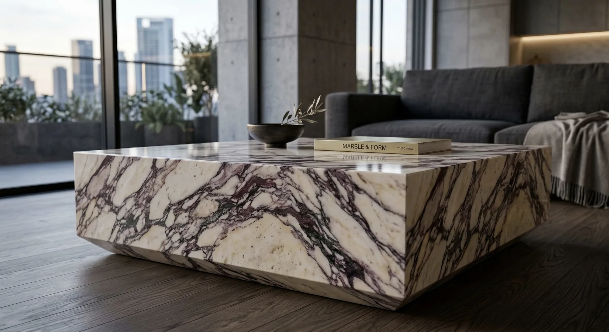
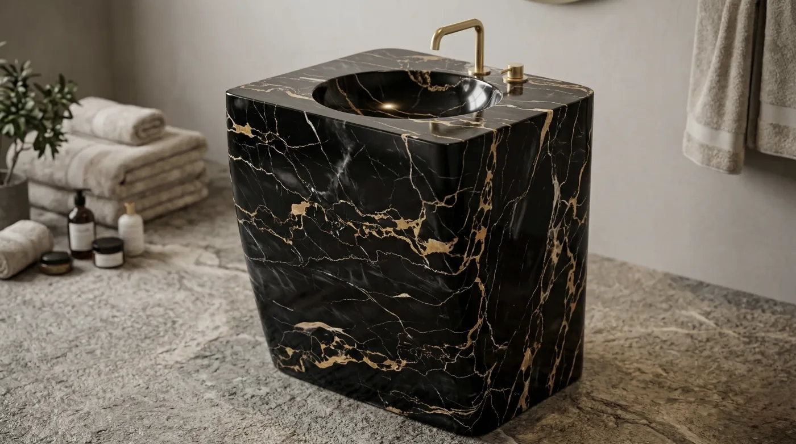
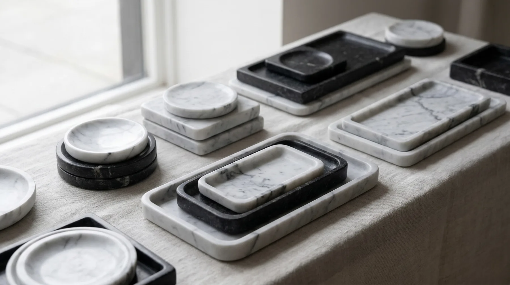

Concepto · en estudio
Mesas y pedestales
Proporción, peso y veta como parte del diseño. Piezas para salón, recibidor o exposición.
550–5.900 €+
Rango de mercado de mesas de centro y piezas de diseño en piedra o mármol.

LITOS / MOBILIARIO Y OBJETOS
Piezas en piedra para proyectos contemporáneos, desarrolladas a medida.
Ver catálogoImagen conceptual · Línea en estudio, no portfolio ejecutado.
Catálogo de mobiliario · Referencias orientativas
Diseños en estudio, piezas de piedra natural y propuestas a medida para interiorismo. Las imágenes son conceptuales y los importes son referencias externas de mercado.
Imágenes conceptuales, no portfolio ejecutado
Concepto · en estudio
Proporción, peso y veta como parte del diseño. Piezas para salón, recibidor o exposición.
550–5.900 €+
Rango de mercado de mesas de centro y piezas de diseño en piedra o mármol.

Concepto · en estudio
Piezas singulares para proyectos residenciales y contract, desde opciones compactas hasta piezas escultóricas.
129–249 € estándar
Las piezas de autor y gran formato alcanzan 7.700 € o más en el mercado. Se cotiza según tipo de pieza.

Concepto · en estudio
Volúmenes, soportes y detalles desarrollados a medida para interiorismo y arquitectura.
Desde 240 €
Referencia de pequeños objetos decorativos en mármol. Elementos arquitectónicos y series cortas se presupuestan individualmente.
Concepto · en estudio
Elementos de apoyo y volúmenes compactos, pensados según la escala de cada espacio.
550–4.100 €
Referencias de mercado de mesas auxiliares en piedra natural. No es una tarifa de LITOS.
Orientación de mercado · Sin tarifas cerradas
Los importes visibles en las fichas son referencias de otras empresas en España, consultadas en octubre de 2026. No son precios de venta ni ofertas de LITOS. Material, dimensiones, acabado, transporte e impuestos pueden variar.
Fuentes públicas de referencia: Canica, Mawrble y Tikamoon.
Solicitar presupuesto individualCada encargo parte de una conversación. Estudiamos la materia, las medidas, el acabado y la viabilidad antes de concretar el presupuesto.
Nos cuenta la necesidad, el lugar y la intención de la pieza.
Concretamos geometría, material, acabado y límites técnicos.
Preparamos y transformamos la piedra en el taller.
Comprobamos el resultado y acordamos el siguiente paso.
Indique lo que necesita, las medidas aproximadas y la materia si la conoce. La propuesta y el presupuesto se estudian de forma personalizada.
litos.artesania@gmail.com